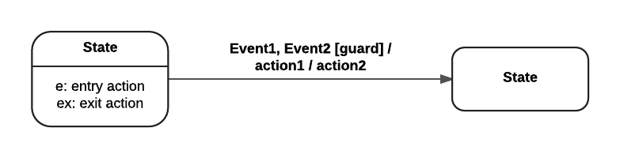
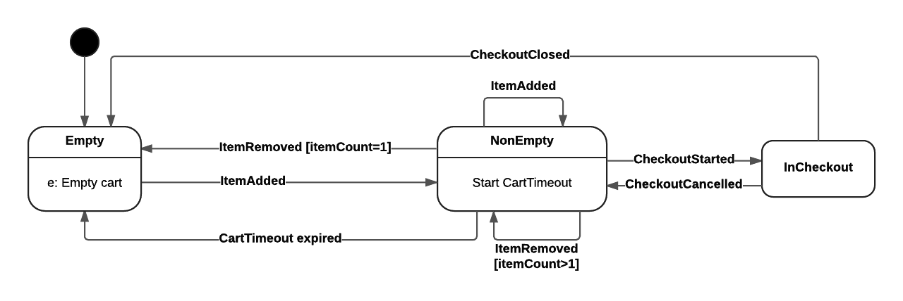
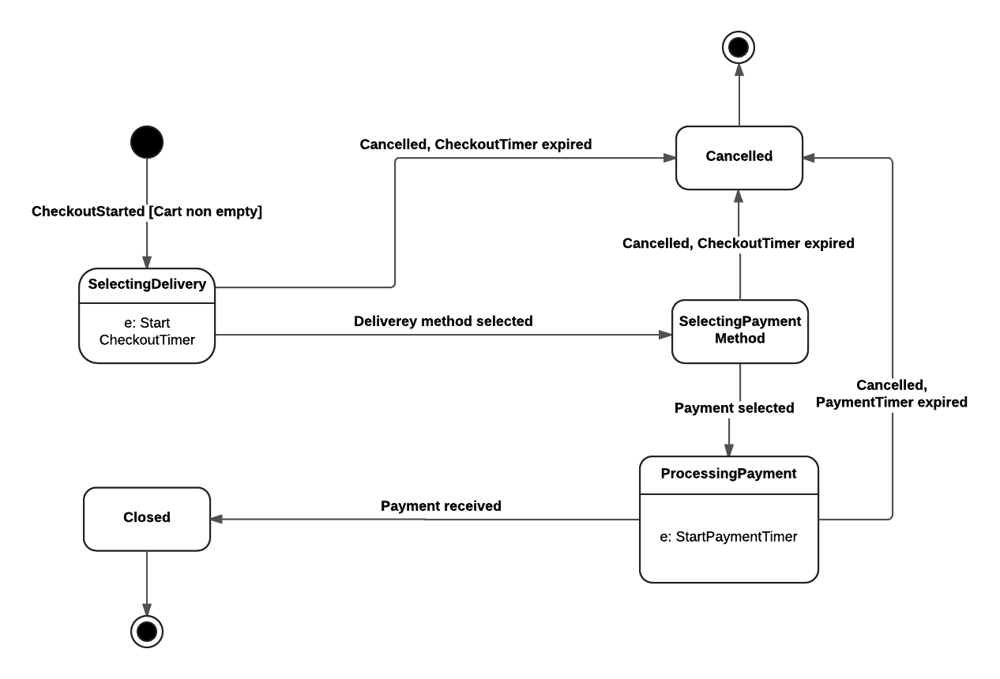

Programowanie reaktywne w jezyku Scala
Projektowanie systemu aktorów
Przykłady
-
git clone https://github.com/balis/reactive-lab2
Uruchomienie:
cd reactive-lab2
sbt "run-main reactive2.BankApp"
sbt "run-main reactive2.ToggleApp"
Wygenerowanie projektu Eclipse:
> cd reactive-lab2
> sbt eclipse
Konfiguracja logowania znajduje się w pliku src/main/resources/application.conf (źródło).
- Przykład BuddyChat
- W pliku build.sbt proszę uaktualnić wersję Scali (2.11.3) i akka-actor (2.5.4)
Uruchomienie przykładu:
$ git clone https://github.com/sdanzig/buddychat
$ cd buddychat
$ sbt run
Maszyna stanów
- Notacja

- Event1, Event2 -- każde ze zdarzeń może inicjować zmianę stanu
- [guard] -- warunek logiczny, który dodatkowo musi być spełniony, żeby doszło do zmiany stanu
- Akka FSM
Zadanie -- e-Sklep
Zadanie polega na zaimplementowaniu fragmentu systemu e-Sklepu złożonego z następujących aktorów:
- Cart: aktor reprezentujący koszyk na zakupy, który ma działać według następującej maszyny stanów:

- Checkout: aktor, który reprezentuje operację finalizacji zakupu, działający wg następującej maszyny stanów:

Zadania do wykonania:
- (20 pkt) Proszę zaimplementować aktorów Cart i Checkout
- Prosze zaprojektować wiadomości jako Case Class'y.
- Do sterowania maszyną stanów proszę wykorzystać standardowy mechanizm become.
- Proszę stworzyć aplikację, która wykonuje prosty test stworzonych aktorów.
- Do implementacji limitów czasowych proszę wykorzystać mechanizm
timerów (do przeczytania również rozdział o
Schedulerach). Aktor powinien zaplanować wysłanie
wiadomości do samego siebie oznaczającej upłyniecie określonego terminu:
- CartTimer: czas po jakim koszyk jest automatycznie opróżniany.
- CheckoutTimer: czas po jakim rozpoczęta operacja finalizacji zakupu jest anulowana.
- PaymentTimer: maksymalny czas oczekiwania na zrealizowanie płatności, po którym operacja zakupu jest anulowana.
- (10 pkt) Proszę wykorzystać Akka FSM do implementacji maszyny stanów w Aktorze Cart.
- (10 pkt) Proszę wykorzystać Akka FSM do implementacji maszyny stanów w Aktorze Checkout.
Bartosz Baliś, balis at agh edu pl
Maciej Malawski, malawski at agh edu pl
Katarzyna Rycerz, kzajac at agh edu pl
|